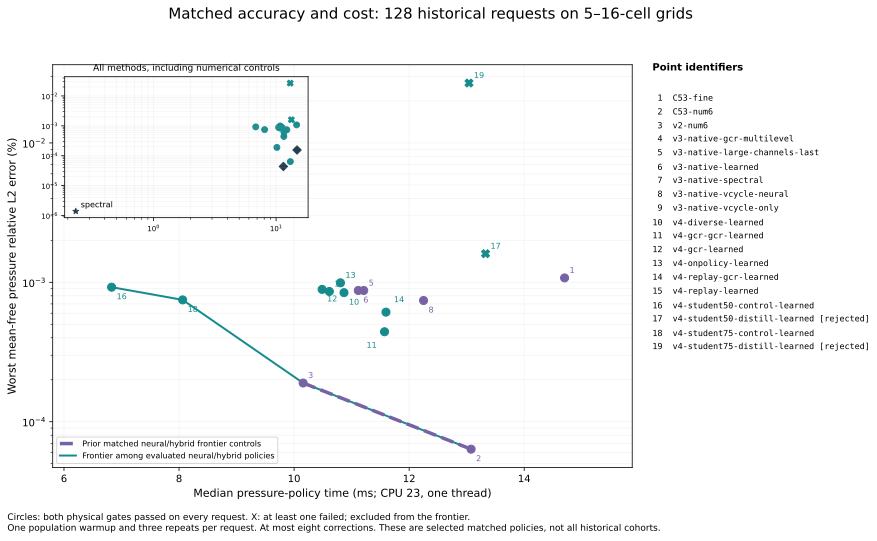
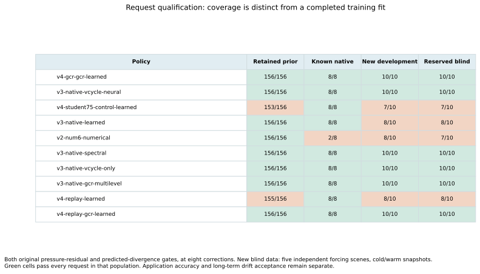
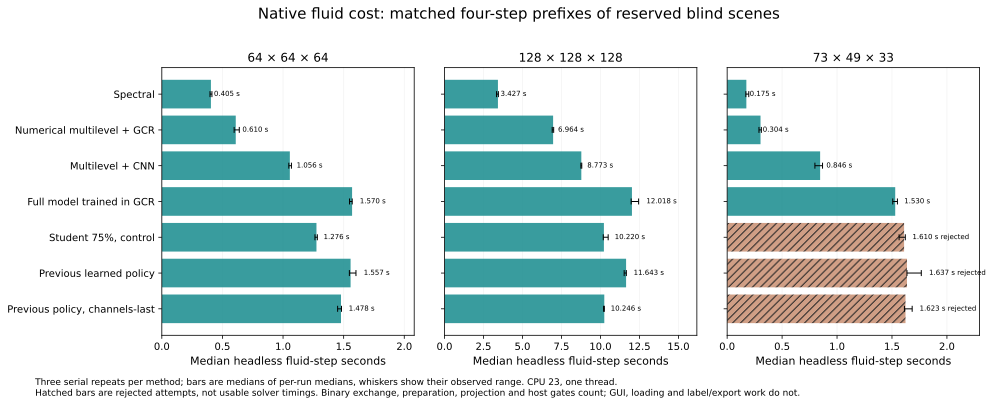
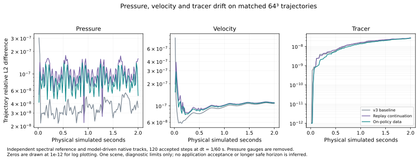

Completed controlled exploration. Solver integration and global correction improve blind coverage; the tested distillation and added-data recipes do not establish a general improvement. Updated 2026-10-19T05:16:56.966546+00:00.




Five independent forcing scenes produce ten cold/warm requests on 32³, 37×29×19, 64³, 73×49×33 and 128³ grids. Selection was frozen after the complete development matrix and all eight full-128³ deployment-transfer checks, before these scenes were captured. The GCR-trained full model and the frozen multilevel/CNN hybrid each pass all ten; the previous learned policy passes eight and the selected 75%-channel student seven. The hybrid misses one of 156 retained prior requests; the GCR-trained policy retains all 156. The matched replay model also passes all ten when used inside GCR, with the same median four CNN calls as the solver-trained model. Thus the development median-call improvement from solver-aware training did not carry through to this blind median. The spectral label defines the pressure comparison, so its zero relative pressure difference is not a claim of zero equation error.
| Policy | Gates passed | Median CNN calls | Worst pressure rel. L2 |
|---|---|---|---|
| v2-num6-numerical | 7/10 | 7.5 | 1.25e-05 |
| v3-native-gcr-multilevel | 10/10 | 0.0 | 5.79e-08 |
| v3-native-learned | 8/10 | 5.0 | 0.000785 |
| v3-native-spectral | 10/10 | 0.0 | 0 |
| v3-native-vcycle-neural | 10/10 | 2.0 | 5.87e-07 |
| v3-native-vcycle-only | 10/10 | 0.0 | 5.14e-08 |
| v4-gcr-gcr-learned | 10/10 | 4.0 | 8.6e-07 |
| v4-replay-gcr-learned | 10/10 | 4.0 | 1.1e-06 |
| v4-replay-learned | 8/10 | 5.0 | 0.000341 |
| v4-student75-control-learned | 7/10 | 4.5 | 0.00142 |
Students use 75% and 50% of the fine-network channel widths, with the learned global branch retained. Each has a matched non-distillation control. Full-width arms compare replay, GCR-aware training, forcing/shape diversity, and model-generated states. Every fit has 2,400 updates and retains the original 1,600-small-sample stream; actual cell and teacher work are separate. A completed fit is not a claim that its pressure predictions qualify.
| Arm | State | Parameters | Updates | Student optimizer-forward cells | Distillation teacher-forward cells | CPU artifact parity |
|---|---|---|---|---|---|---|
| v4-student75-distill | completed | 209374 | 2400 | 1224395120 | 1224395120 | True |
| v4-student75-control | completed | 209374 | 2400 | 1224395120 | 0 | True |
| v4-student50-distill | completed | 93758 | 2400 | 1224395120 | 1224395120 | True |
| v4-student50-control | completed | 93758 | 2400 | 1224395120 | 0 | True |
| v4-replay | completed | 371214 | 2400 | 1224395120 | 0 | True |
| v4-gcr | completed | 371214 | 2400 | 1224395120 | 0 | True |
| v4-diverse | completed | 371214 | 2400 | 1209357700 | 0 | True |
| v4-onpolicy | completed | 371214 | 2400 | 1224897366 | 0 | True |
Consumed historical and v3 native development requests. Both original physical gates apply at eight corrections. These results expose regressions; they are not fresh blind evidence. Cube accuracy does not imply rectangular-domain coverage.
| Model | Population | Gates passed | Worst residual | Worst mean-free pressure rel. L2 |
|---|---|---|---|---|
| v4-student75-control | consumed128 | 128/128 | 9.9e-07 | 7.48e-06 |
| v4-student75-control | native-development | 8/8 | 8.2e-07 | 2.6e-07 |
| v4-student75-control | new-rectangular | 10/12 | 1.21e-06 | 2e-05 |
| v4-student75-control | new-small | 4/4 | 8e-07 | 1.56e-06 |
| v4-student75-control | old-cube32 | 4/4 | 5.77e-07 | 3.98e-07 |
| v4-student75-control | old-cube64 | 4/4 | 9.17e-07 | 1.13e-07 |
| v4-student75-control | old-rectangular | 3/4 | 6.8e-06 | 6.52e-06 |
| v4-student75-distill | consumed128 | 114/128 | 8.94e-05 | 0.000269 |
| v4-student75-distill | native-development | 8/8 | 7.36e-07 | 1.75e-07 |
| v4-student75-distill | new-rectangular | 0/12 | 0.000384 | 0.0018 |
| v4-student75-distill | new-small | 0/4 | 1.71e-05 | 4.17e-05 |
| v4-student75-distill | old-cube32 | 4/4 | 9.8e-07 | 1.4e-07 |
| v4-student75-distill | old-cube64 | 4/4 | 2.4e-07 | 6.29e-08 |
| v4-student75-distill | old-rectangular | 0/4 | 0.515 | 0.587 |
Ten new cold/warm pressure requests from five independently reserved forcing scenes, including odd rectangular grids. This population is separate from the easier eight v3 native requests. All rows use eight-correction ceilings and unchanged physical gates. Large errors on rejected requests remain visible; they do not represent accepted simulation steps.
| Model | Policy | Retained prior gates | New v4 gates | New median CNN calls | New worst pressure rel. L2 |
|---|---|---|---|---|---|
| v2-num6 | numerical | 156/156 | 8/10 | 7.0 | 2.93e-06 |
| v3-native | gcr-learned | 156/156 | 9/10 | 5.0 | 3.95e-06 |
| v3-native | gcr-multilevel | 156/156 | 10/10 | 0.0 | 1.58e-07 |
| v3-native | large-channels-last | 156/156 | 8/10 | 5.0 | 0.00108 |
| v3-native | learned | 156/156 | 8/10 | 5.0 | 0.00108 |
| v3-native | spectral | 156/156 | 10/10 | 0.0 | 0 |
| v3-native | vcycle-neural | 156/156 | 10/10 | 2.5 | 6e-06 |
| v3-native | vcycle-only | 156/156 | 10/10 | 0.0 | 1e-07 |
| v4-diverse | learned | 153/156 | 8/10 | 5.0 | 0.000707 |
| v4-gcr | gcr-learned | 156/156 | 10/10 | 4.0 | 2.4e-06 |
| v4-gcr | learned | 156/156 | 8/10 | 5.0 | 0.000234 |
| v4-onpolicy | learned | 155/156 | 8/10 | 5.0 | 0.000766 |
| v4-replay | gcr-learned | 156/156 | 10/10 | 5.0 | 4.49e-06 |
| v4-replay | learned | 155/156 | 8/10 | 5.0 | 0.000381 |
| v4-student50-control | learned | 146/156 | 6/10 | 5.5 | 0.00673 |
| v4-student50-distill | learned | 16/156 | 1/10 | 8.0 | 41.1 |
| v4-student75-control | learned | 153/156 | 7/10 | 5.0 | 0.000506 |
| v4-student75-distill | learned | 122/156 | 6/10 | 6.5 | 39.8 |
Nineteen policies, 128 identical requests on grids with 5–16 cells per axis, CPU 23 and one thread. These are 128 requests, not 128³ domains. One complete warmup precedes three timed repeats per request. All network, coarse solve, conversion, equation and stopping work counts. Initialization, loading and teacher-label generation are outside policy time. This compares selected matched prior controls, not the complete historical cohort frontier. A point that fails either physical gate is excluded from the qualified frontier.
| Policy | Parameters | Gates passed | Median ms | Worst pressure rel. L2 |
|---|---|---|---|---|
| C53-fine | 370016 | 128/128 | 14.701 | 1.08e-05 |
| C53-num6 | 370016 | 128/128 | 13.077 | 6.36e-07 |
| v2-num6 | 370016 | 128/128 | 10.157 | 1.9e-06 |
| v3-native-gcr-multilevel | 0 | 128/128 | 11.467 | 4.37e-07 |
| v3-native-large-channels-last | 371214 | 128/128 | 11.210 | 8.74e-06 |
| v3-native-learned | 371214 | 128/128 | 11.116 | 8.74e-06 |
| v3-native-spectral | 0 | 128/128 | 0.232 | 1.38e-08 |
| v3-native-vcycle-neural | 371214 | 128/128 | 12.250 | 7.4e-06 |
| v3-native-vcycle-only | 0 | 128/128 | 14.825 | 1.55e-06 |
| v4-diverse-learned | 371214 | 128/128 | 10.867 | 8.43e-06 |
| v4-gcr-gcr-learned | 371214 | 128/128 | 11.572 | 4.42e-06 |
| v4-gcr-learned | 371214 | 128/128 | 10.487 | 8.9e-06 |
| v4-onpolicy-learned | 371214 | 128/128 | 10.806 | 9.92e-06 |
| v4-replay-gcr-learned | 371214 | 128/128 | 11.597 | 6.11e-06 |
| v4-replay-learned | 371214 | 128/128 | 10.613 | 8.59e-06 |
| v4-student50-control-learned | 93758 | 128/128 | 6.828 | 9.23e-06 |
| v4-student50-distill-learned | 93758 | 16/128 | 13.328 | 1.6e-05 |
| v4-student75-control-learned | 209374 | 128/128 | 8.063 | 7.48e-06 |
| v4-student75-distill-learned | 209374 | 114/128 | 13.040 | 0.000269 |
On the reserved 128³ four-step scene, the multilevel/CNN hybrid reduces the previous learned policy from 11.64 to 8.77 seconds per step (24.6% lower). Channels-last execution reduces that previous policy to 10.25 seconds (12.0% lower). The numerical multilevel/GCR control takes 6.96 seconds and the spectral control 3.43 seconds. The GCR-trained model takes 12.02 seconds; its broader qualification does not imply a speed gain. These comparisons are scene-specific, headless and single-threaded, with three repeats and all pressure gates retained.
Sixty-three serial episodes: three independently reserved blind-scene prefixes, seven methods, three balanced-order repetitions. Each accepted episode advances four steps. Timings include native preparation, pressure exchange, projection and acceptance; label generation, full-state exports, loading and GUI are disabled. Bars and this table use the median of the three per-run frame medians, with the observed run range. A rejected attempt is explicitly marked and cannot be compared as a usable simulation speed.
| Domain cells | Policy | Completed repeats | Median step seconds | Run-median range seconds |
|---|---|---|---|---|
| 64×64×64 | v4-student75-control-learned | 3/3 | 1.2757 | 1.2633–1.2830 |
| 64×64×64 | v4-gcr-gcr-learned | 3/3 | 1.5697 | 1.5484–1.5706 |
| 64×64×64 | v3-native-vcycle-neural | 3/3 | 1.0561 | 1.0476–1.0693 |
| 64×64×64 | v3-native-baseline | 3/3 | 1.5572 | 1.5472–1.6015 |
| 64×64×64 | v3-native-layout | 3/3 | 1.4780 | 1.4502–1.4823 |
| 64×64×64 | spectral | 3/3 | 0.4051 | 0.3974–0.4134 |
| 64×64×64 | numerical-gcr-multilevel | 3/3 | 0.6098 | 0.5965–0.6390 |
| 128×128×128 | v4-student75-control-learned | 3/3 | 10.2202 | 10.1798–10.4940 |
| 128×128×128 | v4-gcr-gcr-learned | 3/3 | 12.0182 | 11.9680–12.4465 |
| 128×128×128 | v3-native-vcycle-neural | 3/3 | 8.7732 | 8.7451–8.8012 |
| 128×128×128 | v3-native-baseline | 3/3 | 11.6428 | 11.5190–11.6594 |
| 128×128×128 | v3-native-layout | 3/3 | 10.2462 | 10.1989–10.2481 |
| 128×128×128 | spectral | 3/3 | 3.4265 | 3.3367–3.4561 |
| 128×128×128 | numerical-gcr-multilevel | 3/3 | 6.9644 | 6.9053–7.0002 |
| 73×49×33 | v4-student75-control-learned | 0/3 | 1.6102 | 1.5648–1.6212 |
| 73×49×33 | v4-gcr-gcr-learned | 3/3 | 1.5295 | 1.5071–1.5495 |
| 73×49×33 | v3-native-vcycle-neural | 3/3 | 0.8462 | 0.7986–0.8680 |
| 73×49×33 | v3-native-baseline | 0/3 | 1.6365 | 1.6365–1.7667 |
| 73×49×33 | v3-native-layout | 0/3 | 1.6232 | 1.6132–1.6837 |
| 73×49×33 | spectral | 3/3 | 0.1748 | 0.1701–0.1968 |
| 73×49×33 | numerical-gcr-multilevel | 3/3 | 0.3037 | 0.2895–0.3113 |
Three real requests, three balanced repeats each, CPU 23, one thread. Input layout conversion and the whole adaptive pressure policy count; compilation is recorded separately. The nine trials per execution are three distinct requests, not nine independent scenes. This preliminary screen does not establish coupled speed or broad accuracy retention.
| Grid | Execution | Trials | Trials passing gates | Median policy ms | CNN share |
|---|---|---|---|---|---|
| (16, 16, 16) | eager | 3 | 3 | 25.78 | 91.4% |
| (16, 16, 16) | channels_last | 3 | 3 | 26.12 | 91.8% |
| (16, 16, 16) | traced_frozen | 3 | 3 | 24.10 | 90.9% |
| (64, 64, 64) | eager | 3 | 3 | 1358.90 | 96.3% |
| (64, 64, 64) | channels_last | 3 | 3 | 1251.65 | 95.9% |
| (64, 64, 64) | traced_frozen | 3 | 3 | 1351.70 | 96.3% |
| (128, 128, 128) | eager | 3 | 3 | 10221.63 | 93.8% |
| (128, 128, 128) | channels_last | 3 | 3 | 8596.90 | 92.1% |
| (128, 128, 128) | traced_frozen | 3 | 3 | 9972.59 | 93.8% |
Frozen weights, consumed development only. The hierarchy preserves constants and uses exact recursive tensor-product Galerkin operators. GCR does not assume that a neural preconditioner is SPD. Exploratory timings may overlap other campaign work, so this table reports accuracy and work; repeated timing remains separate.
| Method | Requests | Gates passed | Median CNN calls | Worst pressure rel. L2 |
|---|---|---|---|---|
| learned | 12 | 12 | 4.0 | 1.13e-06 |
| spectral | 12 | 12 | 0.0 | 5.25e-09 |
| vcycle-neural | 12 | 12 | 2.0 | 1.77e-06 |
| vcycle-only | 12 | 12 | 0.0 | 2.69e-07 |
Frozen weights, consumed development only. The hierarchy preserves constants and uses exact recursive tensor-product Galerkin operators. GCR does not assume that a neural preconditioner is SPD. Exploratory timings may overlap other campaign work, so this table reports accuracy and work; repeated timing remains separate.
| Method | Requests | Gates passed | Median CNN calls | Worst pressure rel. L2 |
|---|---|---|---|---|
| learned | 24 | 24 | 4.0 | 1.62e-05 |
| multilevel | 24 | 24 | 0.0 | 2.62e-07 |
| multilevel-neural | 24 | 24 | 2.0 | 1.76e-06 |
| recurrence | 24 | 24 | 4.0 | 1.09e-05 |
The diversified and on-policy views both retain every field of the prior 34-parent bank. Added on-policy labels solve each actual model-generated pressure equation with the spectral teacher. Neither development nor blind scenes enter training. Grid dimensions, cells per metre, fluid density and timestep remain distinct metadata.
| View | Parents | Retained v3 | Added v4 | Encoded MiB | All decoded field hashes verified |
|---|---|---|---|---|---|
| diverse-training-view-01 | 42 | 34 | 8 | 204.24 | True |
| onpolicy-training-view-01 | 38 | 34 | 4 | 217.39 | True |
Matched initial conditions and forcing; independently advanced spectral and v3-native tracks. Full pressure, velocity and tracer arrays are retained and hash-verified. Rejected steps are excluded from matched times. These are scene-specific diagnostic curves, not application accuracy limits or a universal safe step count.
| Scene | Accepted steps | Simulated seconds | Final pressure rel. L2 | Final velocity rel. L2 | Final tracer rel. L2 |
|---|---|---|---|---|---|
| v4-rollout-development-03 | 32 | 0.5333333333333333 | 4.33e-07 | 8.91e-08 | 4.22e-09 |
| v4-rollout-development-00 | 600 | 10.0 | 7.4e-07 | 1.16e-07 | 1.33e-07 |
| v4-rollout-development-01 | 300 | 5.0 | 6.65e-07 | 9.04e-08 | 6.28e-08 |
| v4-rollout-development-02 | 120 | 2.0 | 3.56e-08 | 1.07e-07 | 2.71e-08 |
One independent 64³ scene, 120 accepted steps, two simulated seconds, identical starting conditions and forcing. On-policy training reduces the final pressure difference versus matched replay, but velocity remains around 1.1×10⁻⁷ and tracer around 2.7×10⁻⁸. This does not demonstrate a material improvement in transported motion or a longer acceptable application horizon. No end-to-end differentiable fluid rollout was trained.
| Model | Accepted steps | Simulated seconds | Final pressure rel. L2 | Final velocity rel. L2 | Final tracer rel. L2 |
|---|---|---|---|---|---|
| v3 baseline | 120 | 2.0 | 3.556e-08 | 1.074e-07 | 2.709e-08 |
| Replay continuation | 120 | 2.0 | 1.6e-07 | 1.105e-07 | 2.785e-08 |
| On-policy continuation | 120 | 2.0 | 5.13e-08 | 1.098e-07 | 2.703e-08 |
One separately reserved development forcing scene at 32 cells per metre. Passing one pressure request does not qualify general 256³ deployment or long trajectories.
| Policy | Result | Advanced steps | CNN calls | Equation residual |
|---|---|---|---|---|
| learned | completed | 1 | 8 | 6.19e-07 |
| spectral | completed | 1 | 0 | 6.08e-12 |
The failed 73×49×33 development cold start places 99.60% of mean-free pressure-error energy in the lowest three modes per axis. This is pressure-error energy, not equation-residual energy. A post-hoc exact low-mode correction improves pressure error but still fails the unchanged gates, so it is a diagnosis rather than a selected solution.
These are ranked hypotheses from this campaign, not measured gains. Learning multigrid transfer and neural preconditioning have independent research precedents: Learning to Optimize Multigrid PDE Solvers and A Neural-Preconditioned Poisson Solver. Reusing solver directions also has a direct pressure-Poisson precedent in Recycling Krylov subspaces for CFD applications. These published results do not establish a speedup for this implementation. Finer teacher timesteps and sparse pressure anchors remain lower priority: neither automatically supplies a better label for the existing pressure equation.
All six requested explorations are complete and audited. Eight CUDA fits (19,200 updates), eight fresh CPU restores, the complete development/blind matrices and final serial timing are retained. No model has been promoted. Application-specific drift acceptance, independently swept spatial-wavenumber training, end-to-end differentiable fluid rollouts and production 512³/1024³ domains remain outside this qualification. The bounded 256³ check is one cold request.
Completion audit · Retained evidence and fresh Run custody audit
Machine-readable report · Requested tracks and evidence requirements · Frozen selection rule · Prior campaign